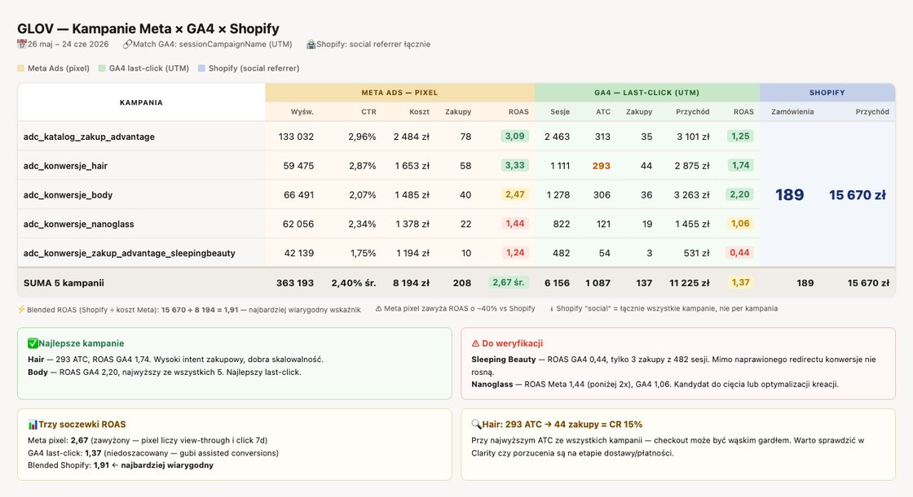

Mission Control — jedno miejsce, w którym widać całość
Analityka nie jest raportem, który się zamawia. Jest stanem, który widać. Mission Control zbiera sygnały ze wszystkich zakresów, liczy Wasze normy z Waszej historii i odzywa się sam, kiedy coś odbiega. Poniżej: jak to wygląda w praktyce i dwa dowody, że nie jest to makieta.
Pulpit działa dziś na Waszych danychZakres: MC · Nadzór
Co konkretnie widać w kokpicie
Pięć źródeł w jednym miejscu. Zamiast siedmiu paneli otwieranych osobno — jeden pulpit, w którym dane już są zestawione.
Analityka GA4
Ruch, zachowanie i konwersje ze wszystkich Waszych usług pomiarowych, sprowadzone do jednego widoku.
Analityka łączona: Meta, Google i GA4
Te same kampanie w trzech soczewkach naraz, żeby było widać, która liczba jest zawyżona, a która wiarygodna.
Dane z CRM
Walidacja leadów i konwersja na sprzedaż: co z pozyskanych zgłoszeń faktycznie skończyło się zamówieniem.
Analityka SEO i GEO
Pozycje i widoczność z Search Console oraz z narzędzi dedykowanych do odpowiedzi asystentów AI.
Asystent AI do rozmowy o danych
Pytania zadaje się normalnym językiem, bez budowania raportu. Przykład działającego asystenta jest w dokumencie Referencje. Referencje: pulpit z asystentem →
Poniedziałek, 7:00 — zanim ktokolwiek otworzy panel reklamowy
To nie jest opis funkcji. To jest wiadomość, która czeka na kanale zespołu. Trzy rzeczy dzieją się tu naraz i żadna nie wymagała zamówienia analizy.
Discord · #mission-control-audi-plichta7:00
🤖 Mission Control — Tydzień 34 · trzy rzeczy w normie, dwie wymagają uwagi
▲ Zwalidowany CPL Q5: 340 zł (−12% m/m) · Wasza norma 380 zł ▲ Hot leady z Search: 18 · rekord od sześciu miesięcy ▲ Widoczność lokalna Gdańsk + Bydgoszcz ↑ · Stadion 29 → 63 recenzje ▼ Landing „A3 2026" — CR spadł do 1,1% przy Waszej normie 1,9%
↳ Hipoteza: zmiana formularza 12.08? Do sprawdzenia z deweloperem. ⚠ Za trzy tygodnie premiera Q6 e-tron · gotowość materiałów 40%
↳ Brakuje: dwóch kreacji Search, LP dla Gdyni, briefu dla BDC.
Benchmark, nie liczba. „CR 1,1%" nic nie mówi — „1,1% przy Waszej normie 1,9%" zmusza do pytania, co się zmieniło. Anomalia z tropem, nie sam alert: system nie stawia diagnozy, wskazuje kierunek. Wyprzedzenie o trzy tygodnie, bo kalendarz inicjatyw jest w środku systemu, a nie w czyjejś skrzynce.
Podejście wizualne — mierzona rzecz obok swojego obrazka
To jest metoda, nie ozdobnik. Kiedy raport mówi „form_APL_sent — 15 rozpoczęć, 12 konwersji", nikt w firmie nie wie, o który formularz chodzi. Dlatego każdy mierzony formularz stoi w raporcie obok zrzutu ekranu samego siebie, ze swoją nazwą zdarzenia, adresem i liczbami. Zrobiliśmy to dla Was w czerwcu — dziewięć formularzy, wszystkie zmatchowane z GA4.
Co ta jedna zakładka rozstrzygnęła. Że form_jazda-testowa i Formularz_jazda_testowa to ten sam formularz z dwóch różnych tagów. Że siedem zdarzeń widzianych przez GA4 nie występuje w ogóle na Waszej liście formularzy. I że jazda testowa konwertuje na 54,2% — przy 24 rozpoczęciach. Bez zrzutów obok liczb żadnej z tych rzeczy nie dałoby się zauważyć ani obronić na spotkaniu.
Referencja — połączona analityka, która już działa
Panel reklamowy i analityka strony zawsze pokażą inne liczby. Pytanie nie brzmi „które się myli", tylko „jak je zestawić, żeby wiedzieć, ile naprawdę kosztowała sprzedaż". Poniżej gotowy widok zbudowany dla klienta e-commerce: ta sama kampania w trzech systemach obok siebie, złączona po oznaczeniu UTM.
Kampanie w trzech systemach naraz · złączenie po sessionCampaignName (UTM)

To jest cała teza w jednym obrazku. Ta sama kampania ma trzy różne wyniki zależnie od tego, kogo zapytasz: panel reklamowy zawyża o około 40%, bo liczy też wyświetlenia; analityka strony zaniża, bo gubi konwersje wspomagane; dopiero zestawienie z realną sprzedażą daje wskaźnik, na którym można oprzeć decyzję budżetową. Bez wspólnego oznaczenia UTM tego zestawienia nie da się zrobić w ogóle — i to jest odpowiedź, po co UTMomat.
Jak to wygląda u Was. Zamiast sklepu po prawej stronie stoi CRM i zamówienie w salonie. Zamiast zakupu — zwalidowany kontakt i sprzedane auto. Kolumny się zmieniają, mechanizm zostaje ten sam: koszt bierzemy z kont reklamowych, zachowanie z analityki strony, prawdę o sprzedaży z CRM, a spina to jedno oznaczenie pilnowane przez UTMomat.
Dziewięć modułów kokpitu
Każdy odpowiada na jedno pytanie, które dziś wymaga maila do agencji albo nie ma odpowiedzi w ogóle.
Punkty odniesienia
Wasze normy liczone z Waszej historii. Norm się nie wymyśla — wyciąga się je z danych.
Alerty odchyleń z tropem
15% to sygnał, 25% to alarm. W obie strony — nagły wzrost też wymaga zrozumienia. Z hipotezą, nie samym alertem.
Pętla CPL → CPS
Zwalidowany koszt kontaktu i koszt sprzedanego auta, z CRM, w podziale na model i salon.
Priorytety magazynowe
Feed z New Car Sales: model × salon × dni na parkingu → miesięczna decyzja budżetowa.
Status pomiaru
Czy pętla zwrotna, śledzenie połączeń i odświeżanie danych nadal działają. Awaria po cichu jest gorsza niż brak mechanizmu.
Kalendarz inicjatyw i przypominacz
Premiery i akcje z trzytygodniowym wyprzedzeniem. Przypominacz odzywa się sam: co przygotować, do kiedy, czyja to pozycja.
Lista napraw
Wszystkie problemy ze wszystkich audytów w jednym miejscu — priorytet, właściciel, status.
Odpalanie workflowów
Audyty i analizy uruchamiane z kokpitu. Klikacie i system rusza — bez maila z prośbą o raport.
Interaktywny asystent
Pytacie normalnym językiem, odpowiada z Waszych danych. Zna kanały, modele, salony i lejek. Dyskutuje, nie dyktuje.